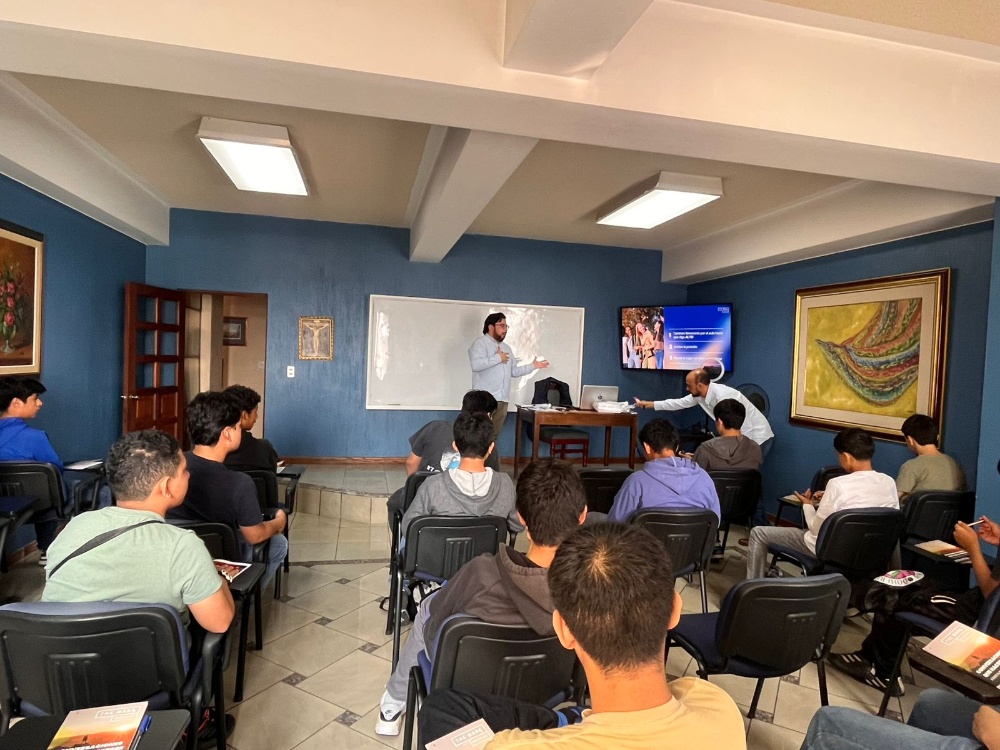

9 de mayo de 2026
Iniciamos el camino a la excelencia
Celebramos con gran entusiasmo nuestra primera sesión de mentorías The Mark Program en Club Tucán. Fue una mañana inspiradora junto a jóvenes comprometidos, estableciendo metas claras y fortaleciendo los valores que nos definen.
Gracias a los padres de familia por confiar en nosotros y a los jóvenes por su entrega. Este es solo el comienzo de un gran camino juntos.
Ver The Mark Program